AgentCore + Codex 构建生产级 Agent 的原理与实践
来源：微信公众号 归档日期：2026-11-05 抓取状态：成功 原文字符：16002｜配图：43 张
摘要速览
- 群同步待补摘要 · 微信公众号
核心内容
（待补充）
可执行启发
（待补充）
我的想法
（待补充）
原文沉淀
目录
- 一、技术方案
- 1、整体架构
- 2、AgentCore-Runloop 的内部执行架构
- 3、模型
- 4、工具
- 5、技能
- 6、存储
- 7、身份与安全
- 基本概念
- 临时凭证
- 8、观测与评估
- 9、多模态
- 实现原理
- 调用 Agent 前，部署适配层将附件下载到当前隔离工作区，例如：
- 能力边界
- 二、实践教程
- 1、前置资源准备
- 2、构建与部署
- 构建
- 配置模型
- 配置 Skill
- 配置凭证（用来完成 Agent 的识图和生图）
- 配置知识库
- 配置记忆
- 搭建 Agent 服务
- Agent 基础配置
- Agent 访问协议配置
- Agent 存储配置
- Agent 可观测
- 三、效果演示
- 1、基础能力
- 2、工具调用
- 3、技能调用
- 4、知识库使用
- 5、记忆使用
- 6、多模态
- 7、Agent 观测
- 基础指标
- 实体详情
- 链路追踪
- Agent 循环详情
- 四、源码和测试数据
- 1、源码
- 2、测试
- AgentCore x Codex 指标数据
本文章演示 AgentCore[1]的自定义代码/镜像能力，目的是展示如何基于自定义的 Harness 框架（Codex） 结合 AgentCore 提供的身份、模型、工具、技能、凭证 、观测评估等能力实现一个端到端的 Agent 应用，内容包含两个部分，技术方案和实践教程，文末附相关源码和本次的测试数据，可以根据需要自行查阅。
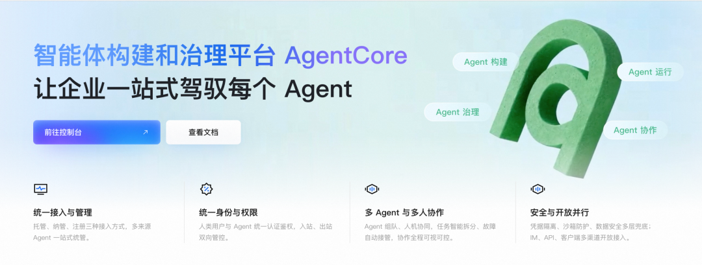
一、技术方案
1、整体架构
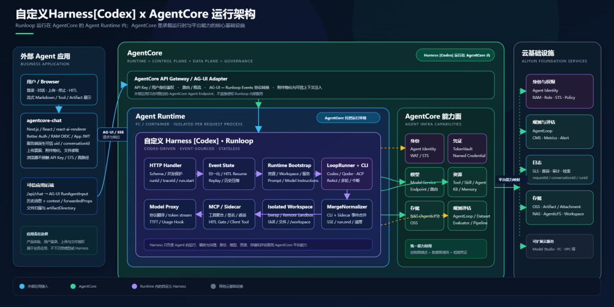
2、AgentCore-Runloop 的内部执行架构
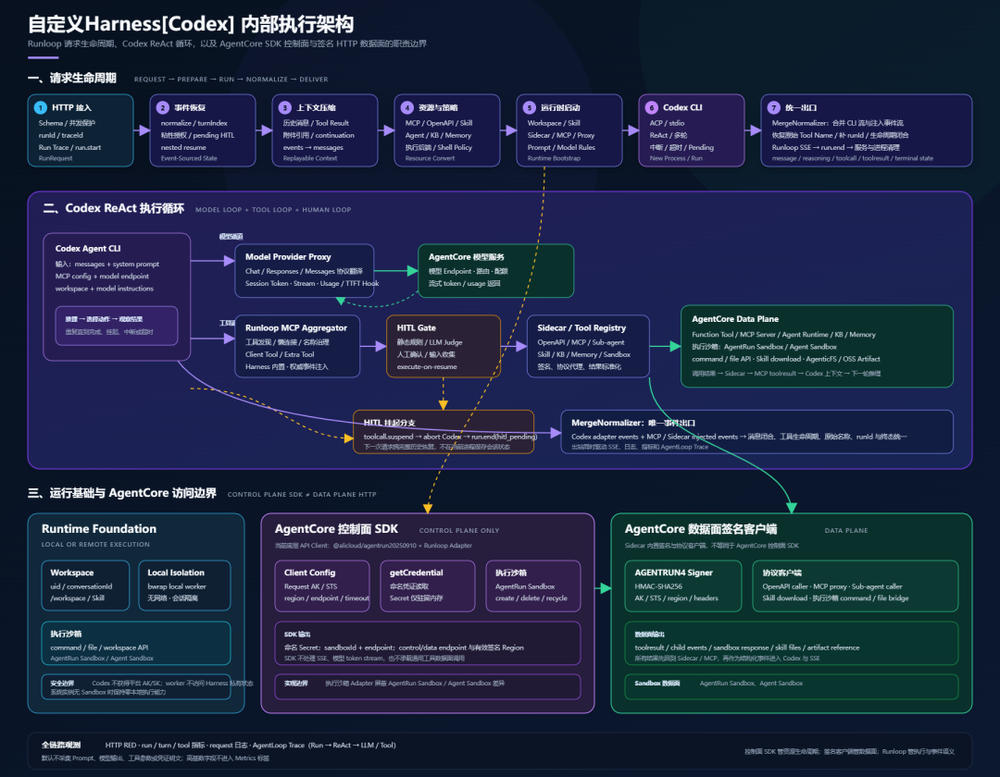
注：
- agentcore-chat 是可交互的智能应用前端。
- agentcore-runloop 是连接 agentcore 基础设施和自定义harness （当前是codex）的运行时框架。
3、模型
harness 对模型的注册消费架构如下，基本就是在 AgentCore 上配置好对应的模型连接，通过环境变量注入到运行时，然后通过 sdk 查询到模型连接地址和凭证然后交给 codex 进行挂载使用。
4、工具
AgentCore 提供资源元数据和数据面凭证，Harness 将资源编译成一个会话级 MCP Tool Registry；Codex 只连接 Runloop MCP Aggregator，通过标准 tools/list/tools/call 使用能力，实际鉴权、HITL、路由和执行全部由 Harness 完成。
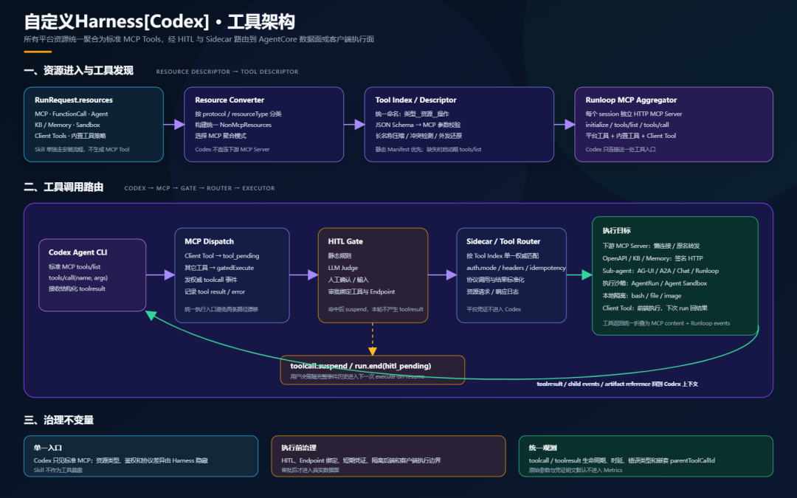
5、技能
AgentCore 提供 Skill 元数据与受控下载入口，Harness 负责签名下载、安装到工作区并向 Codex 注入技能索引；Codex 仅在任务匹配时渐进读取 SKILL.md 及附件，由现有工具和沙箱执行其中的操作，Skill 本身不作为普通 MCP Tool。
这里有一个有意思的实现，Skill 包可按版本持久化在 NAS/AgenticFS 的隔离目录中，Harness 在每次运行时将其只读映射为统一的 .agents/skills/ 逻辑路径；Codex 始终使用相对路径访问技能，从而解耦物理存储、执行环境和 Skill 内部引用，并降低路径冲突与越权访问风险。
6、存储
Agent 在执行任务过程中会持续产生和消费文件，包括用户上传的附件、代码仓库、中间结果以及最终产物，因此需要同时考虑文件持久化、访问性能和多租户隔离。AgentCore 提供 OSS 和 NAS（AgenticFS）两类存储方案：
- NAS（AgenticFS）提供 POSIX 文件系统语义，支持目录结构、随机读写、文件编辑、原子改名以及大量小文件操作，适合作为 Agent 的持久化会话工作盘。代码检出、Git 操作、依赖解压、文件编辑和中间结果都可以直接保存在工作盘中，并在同一会话的多轮执行之间持续复用。
- OSS 适合存储大对象和生命周期相对独立的文件，可用于用户上传附件、只读输入、模型数据、最终 Artifact 以及跨系统文件交付。由于 OSS 本质上是对象存储，随机修改、目录操作和 rename 等文件系统行为并不是它的优势，因此默认不将 OSS FUSE 作为 Agent 的工作目录。
这里推荐采用“OSS 对象交换层 + AgenticFS 会话工作盘”的分层方式，简单来说就是 AgenticFS 负责过程产生数据及持久化，Oss 负责拿到结果展示给用户看。
当前 Harness 已经进行了用户粒度的内部文件隔离所以无需担心文件混用，未来也会支持更严格的基于执行沙箱的隔离方案。
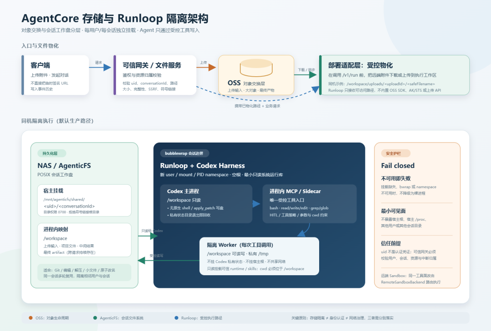
7、身份与安全
Agent 身份是当前构建 Agent 被低估了的一项能力，随着 Agent 进入生产以及进行商业化，可信性变为一种刚需，AgentCore 背后的身份是基于阿里云Agentidentity 实现，在平台上构建的每一个 Agent 都具备一个 Agentidentity 的工作负载身份这个身份可以关联可信的身份提供商，绑定阿里云的资源管理角色，作用是能够让 Agent 更安全的管理云资源，同时能够让你的 Agent 由阿里云来承担信任背书。
基本概念
Agent 身份是一组执行上下文，包括：
- 业务身份：
uid、租户和云账号，表示任务代表谁。
- 执行身份：
conversationId和runId，用于会话隔离与审计。
- 资源身份：本次允许访问的工具、Skill、Sandbox 和子 Agent。
用户身份和资源归属由可信网关校验。uid 只用于隔离和追踪，本身不是认证凭证。
临时凭证
Agent 访问云资源时使用短期、最小权限的 STS 凭证。凭证由可信服务按请求签发，绑定账号、地域、资源范围、操作权限和有效期。
凭证只保留在 Runloop 控制面，由 Runloop 代模型完成请求签名；模型、Codex 和执行 Worker 均不能读取密钥。凭证不写入提示词、事件历史、日志或工作盘，过期后由上游重新签发，不回退使用永久 AK。
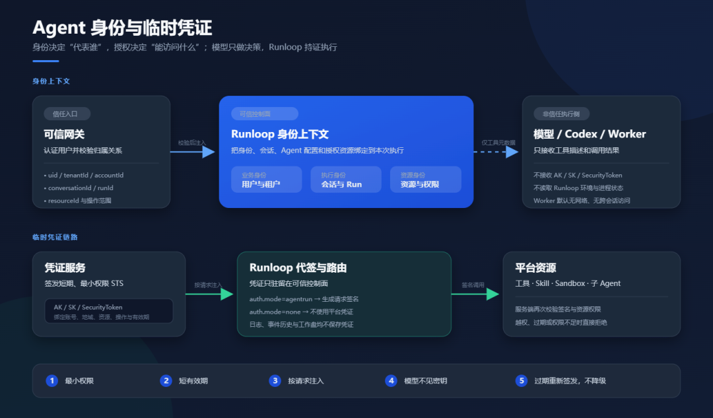
当前 AgentCore runloop 框架中内置了基于工作负载的凭证颁发服务，体现在通过客户端对 Agent 生成的文件进行访问的时候，通过该服务获取最小的 OSS 访问权限，来达到查看目的。
8、观测与评估
AgentCore 的 Runloop 框架可以通过环境变量配置来快速完成对 Agentloop 的观测接入，背后实现是通过自定义 OpenTelemetry 埋点完成接入。应用只需配置 AgentLoop 上报参数，无需在业务代码中逐个创建 span。
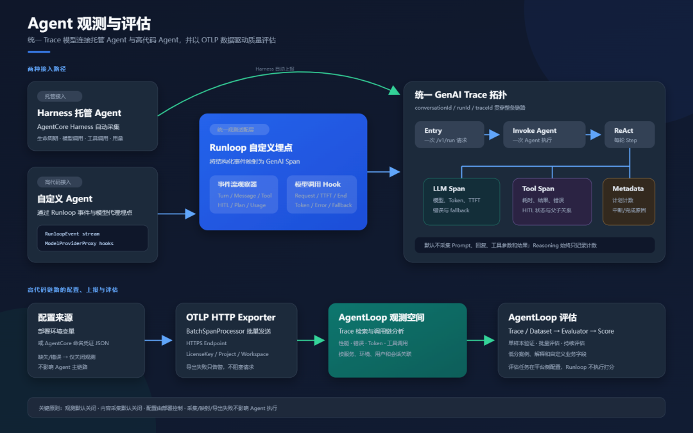
9、多模态
当前 AgentCore Runloop 的多模态能力采用“文件驱动”的实现方式：文本通过 AG-UI 直接传递，图片、文档等非文本内容先被物化为 Agent 工作区内的文件，再由 Agent 使用受控工具读取；PPT、图片、文档等生成结果则以文件产物的形式发布并在前端预览。
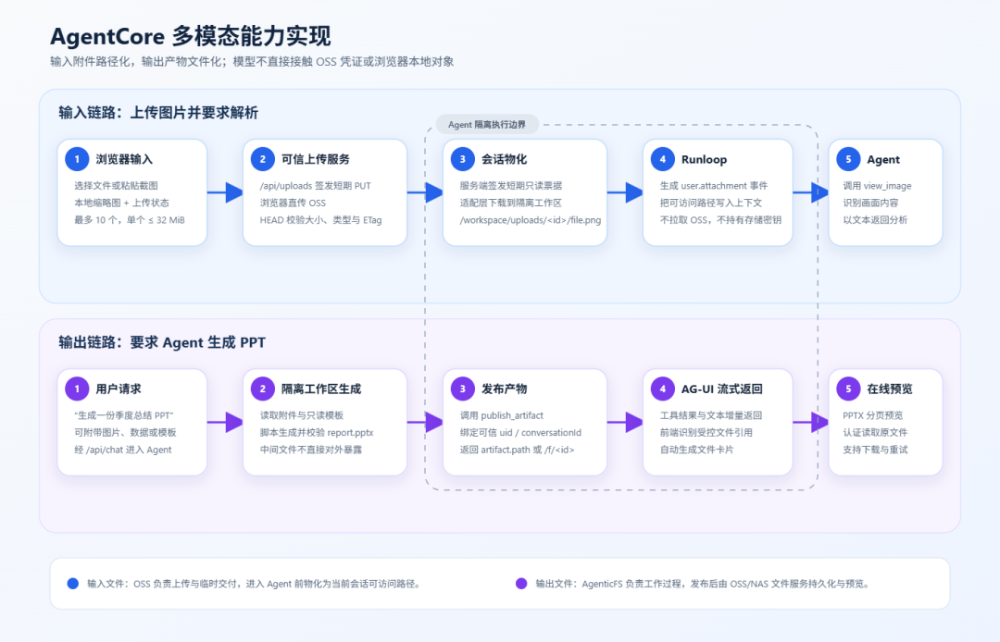
实现原理
多模态输入不会直接以内嵌二进制或 Base64 的方式进入模型上下文，而是经过以下链路：
- 用户在前端选择文件，或者直接粘贴剪贴板中的图片。
- 前端向
/api/uploads申请短期上传地址，并将文件直接上传至 OSS。
- 服务端确认文件大小、类型和 ETag，并校验附件是否属于当前用户和会话。
调用 Agent 前，部署适配层将附件下载到当前隔离工作区，例如：
-
/workspace/uploads/<uploadId>/file.png- Runloop 将附件转换成
user.attachment事件，并把文件路径写入 Agent 上下文。
- Agent 根据文件类型调用
view_image、文件读取或文档处理工具完成理解。
这种方式使 Runloop 与具体存储解耦。Runloop 不访问 OSS、不签发上传凭证，也不持有存储密钥，只消费已经物化且可以在执行环境中访问的文件路径。
能力边界
当前实现本质上是“工具增强的文件多模态”，而不是把图片直接作为模型原生多模态 Content Block 发送：
- Runloop 将附件压缩为文件路径引用。
- 图片理解依赖
view_image。
- 文档理解依赖文件读取及对应解析工具。
- 输出文件依赖
publish_artifact完成交付。
- AG-UI 通道只返回文本、工具事件和受控文件引用，不返回文件二进制。
这种方案不依赖特定模型的原生图片协议，能够在不同 Agent CLI 和模型之间保持一致的文件处理、安全隔离和产物交付能力。
二、实践教程
1、前置资源准备
云产品开通：
- AgentCore
- AgentLoop
- Sls
- CMS
- Agentidentity
- Acr (需创建企业实例)
- RAM
- Fc
- Oss
- Nas (需申请加白 Agenticfs，然后在 Nas 控制台创建)
2、构建与部署
构建
基于 agentcore-runloop 源码构建镜像，推送到 acree。
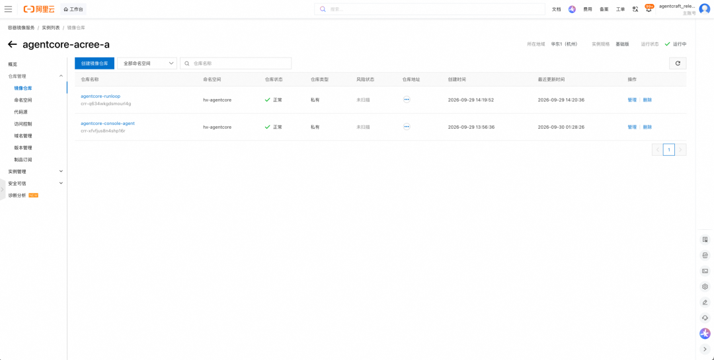
打开 AgentCore 配置好需要的基础资源，模型连接、Skill、Mcp、凭证、记忆、知识库
记录创建好的模型连接、MCP、Skill 的相关名称和版本。（知识库和记忆也是基于 MCP 的因此需要记录对应的 MCP 名称）
配置模型
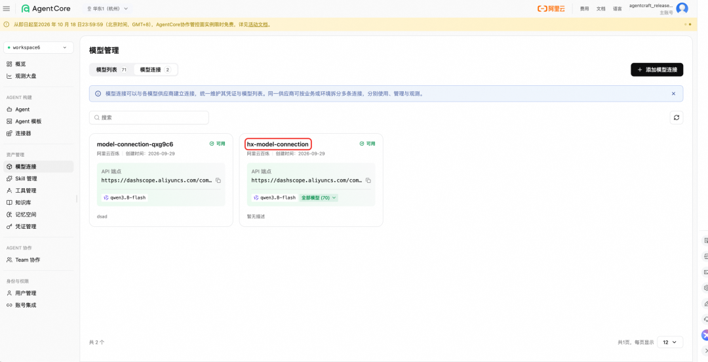
配置 Skill
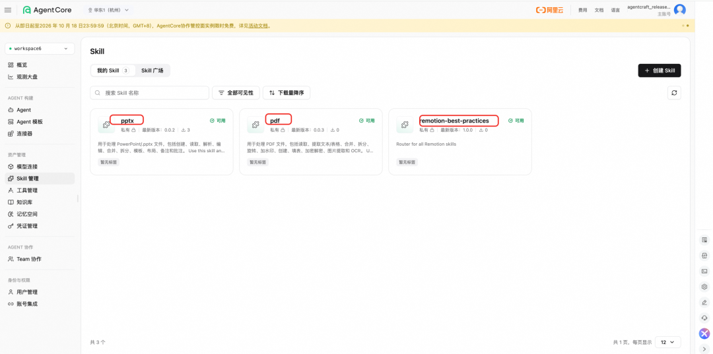
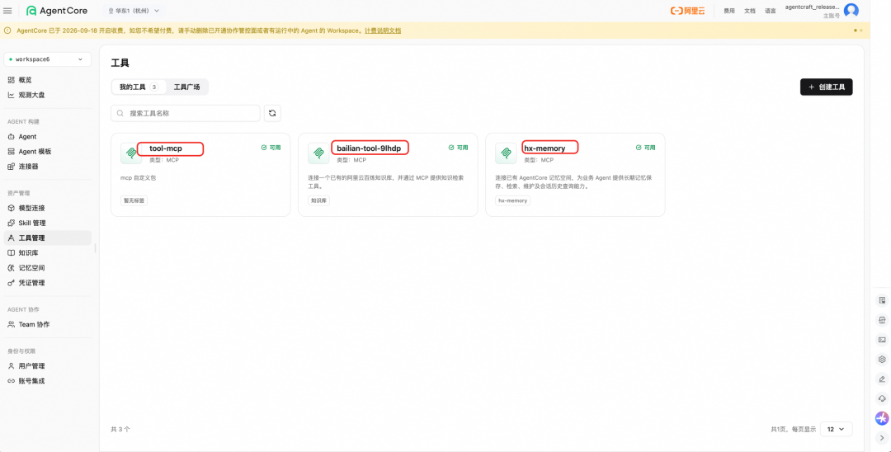
配置凭证（用来完成 Agent 的识图和生图）
这里展示通过凭证配置百炼的生图识图秘钥，满足 Agent 多模态需求，AgentCore-Runloop 内部的图片识别和生成使用独立的模型服务，图片识别默认使用的是 qwen-vl-max，图片生成则使用 qwen-image-plus。
可以通过 AGENTCORE_IMAGE_VISION_MODEL 和 AGENTCORE_IMAGE_GENERATION_MODEL 调整。
多模态使用的凭证 KEY 是 DASHBOARD_API_KEY，可以在 AgentCore 凭证中配置。
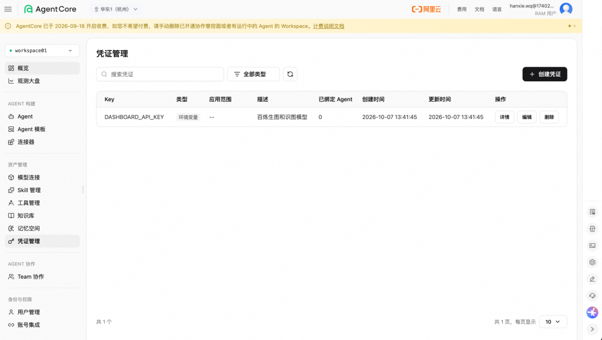
对应的值可以在百炼进行最小粒度的约束，比如只支持 qwen-vl-max 和 qwen-image-plus 防止该凭证越权滥用。
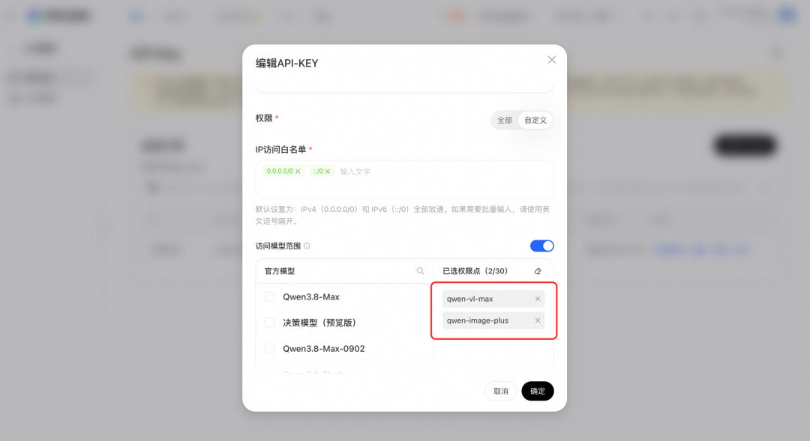
配置知识库
知识库使用百炼知识库，这里需要你提前准备好，并且给予相关的权限才能在 Agent 正常消费。
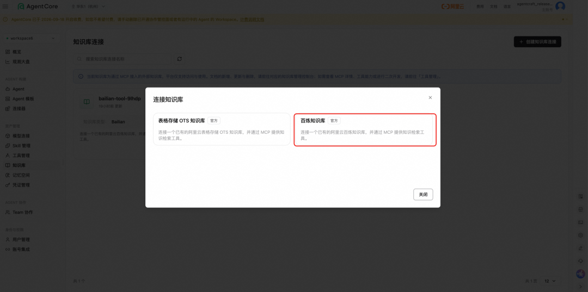
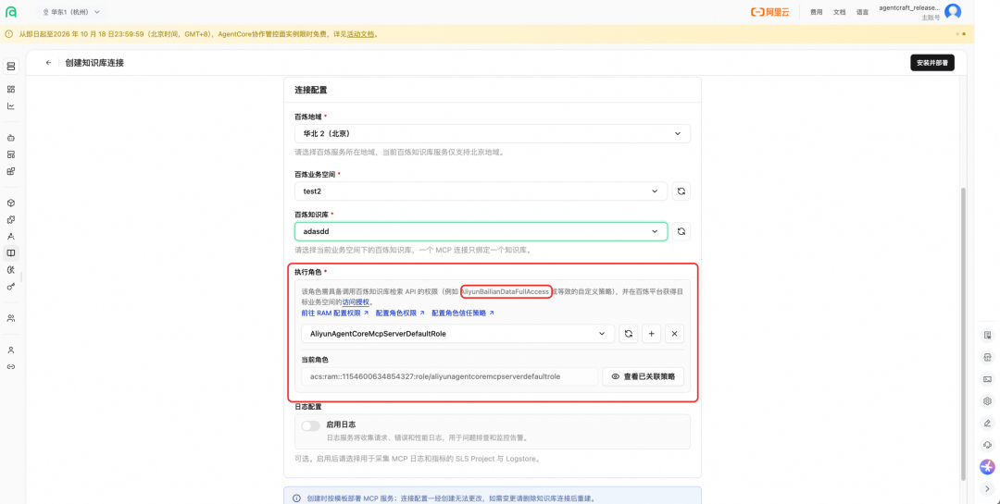
执行角色的部分需要重点关注一下，这里有个双向授权。
- 当前选中的角色要具备 AliyunBailianDataFullAccess 来访问百炼。
- 百炼的页面上要给这个角色授予当角色的数据操作权限。
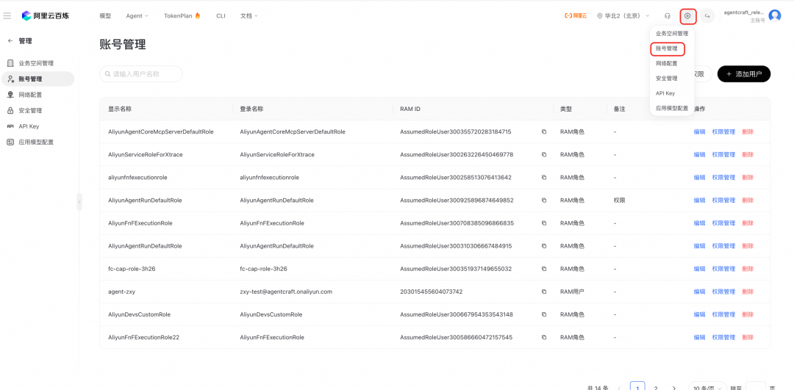
配置记忆
同理记忆在 Agent 的注册消费也是通过 MCP 的方式完成，AgentCore 的记忆构建如下：
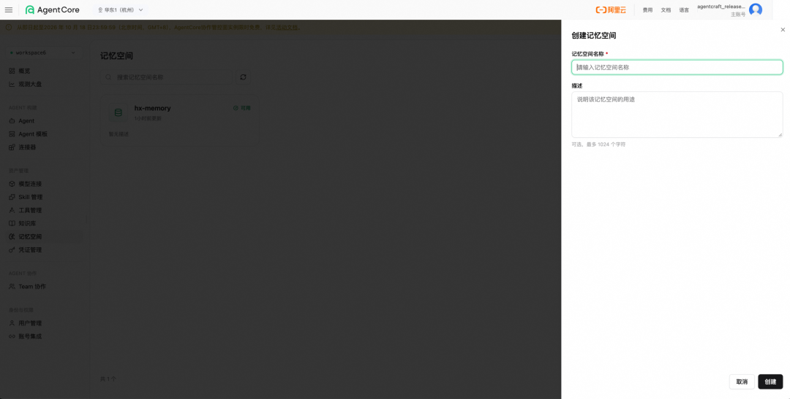
创建后需要开启 MCP 服务。
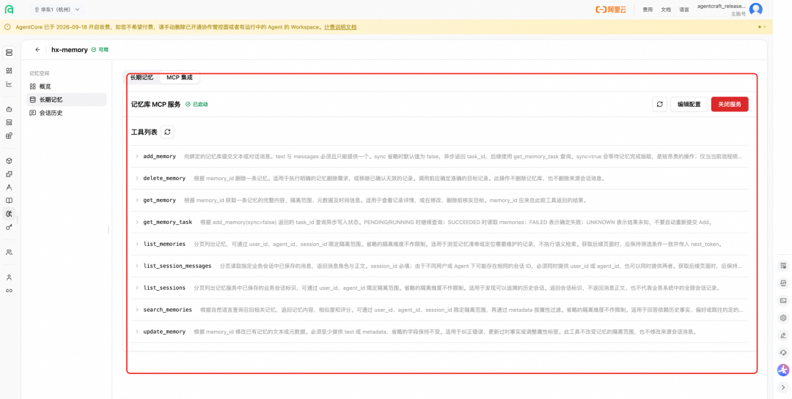
搭建 Agent 服务
Agent 基础配置
当前面准备就绪后可以快速搭建对应的 Agent 了，选择高代码找到对应已经上传好的 agentcore-runloop 镜像。
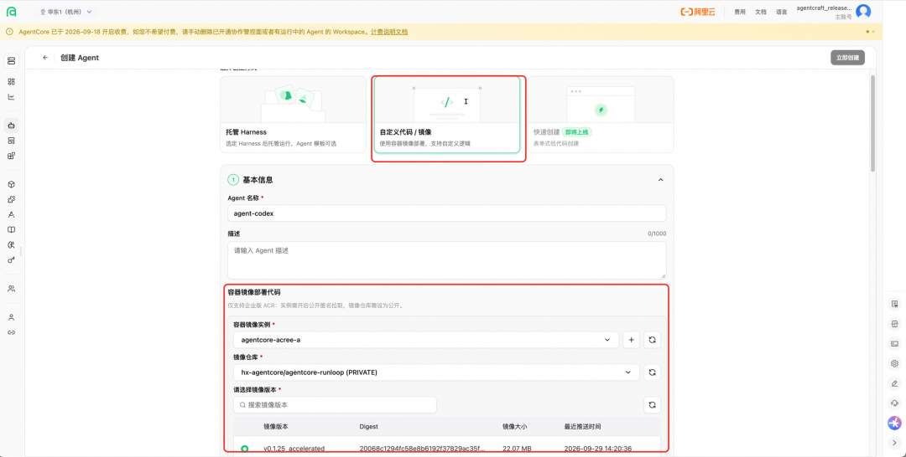
配置指令，执行角色。
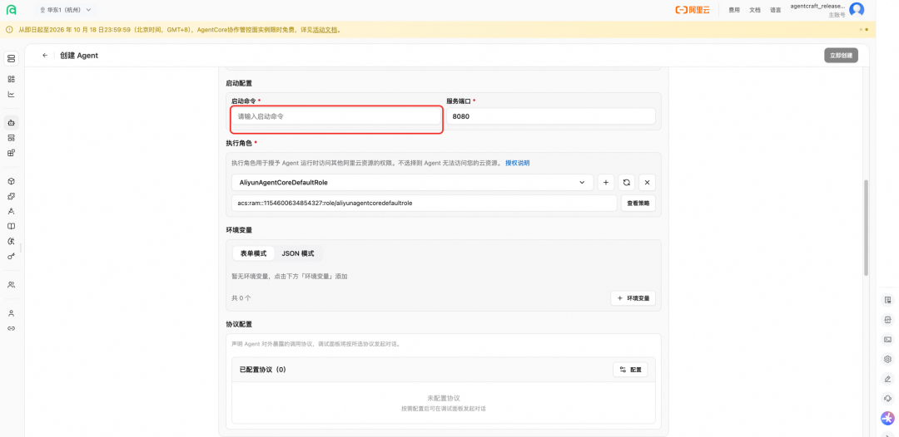
agentcore-runloop 的启动指令如下：
-
node /app/agentcore-runloop/scripts/start.mjs配置环境变量：
| 变量名 | 值示例 | 说明 |
|---|---|---|
| AGENTCORE_MODEL_CONNECTION | hx-model-connection | 模型连接名 |
| AGENTCORE_MODEL_NAME | qwen3.8-max | 模型名 |
| AGENTCORE_SKILLS | pptx@0.0.3,remotion-best-practices | Skill |
| AGENTCORE_SYSTEM_PROMPT | 你是小红，一个有用的助手 | 系统提示词 |
| AGENTCORE_MCP_SERVERS | tool-mcp,bailian-tool-9lhdp,hx-memory | MCP服务 |
| AGENTCORE_WORKDIR | /mnt/agenticfs/shared/users | agent 持久化工作路径 ，对应agentic fs |
| AGENTCORE_ARTIFACT_ROOT | /mnt/oss/data/users | agent 对外可公开产物地址 ，对应oss |
Agent 访问协议配置
配置 AGUI 协议
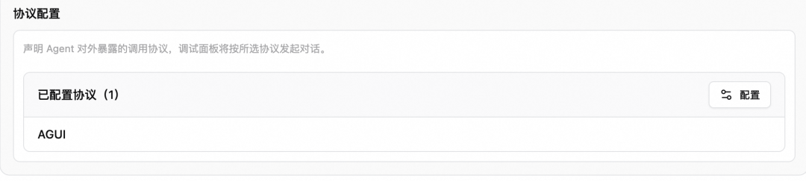
Agent 存储配置
配置 OSS
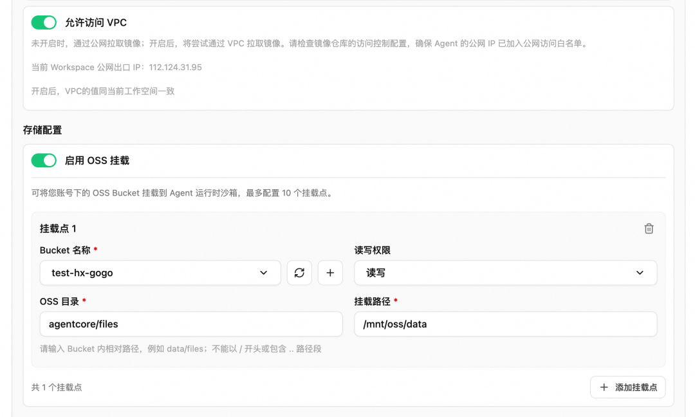
配置 NAS
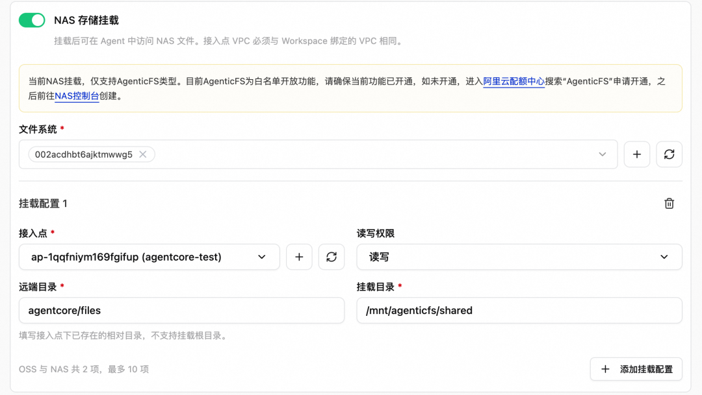
保存后我先使用控制台的调试进行简单测试，确认 ok，再继续进行下面的操作。
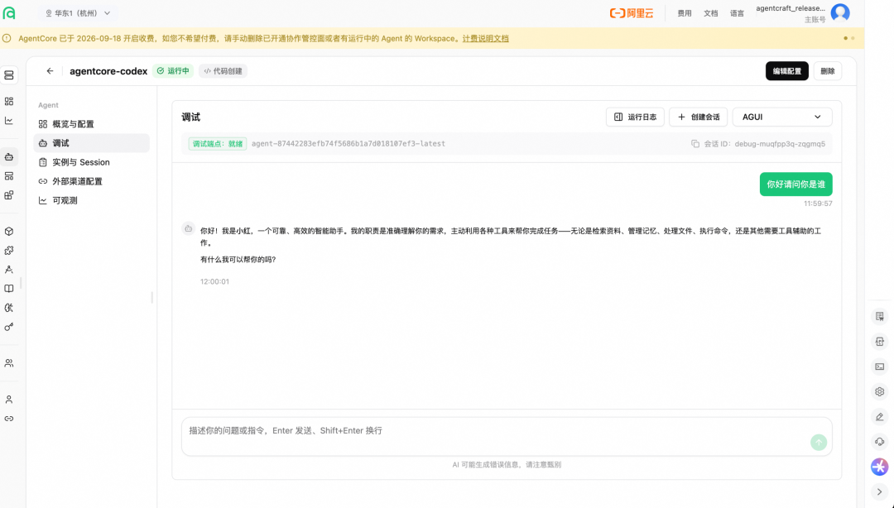
Agent 可观测
镜像已经准备把观测上报的基本能力准备好了，接下来只需要在 Agentloop 配置然后注入环境变量即可。
以下是 Agent 可观测部分的环境变量配置及说明：
| 变量名 | 说明 |
|---|---|
RUNLOOP_AGENTLOOP_CONFIG_SOURCE | 配置来源，可选 env 或 agentcore。 |
RUNLOOP_AGENTLOOP_ENDPOINT | AgentLoop OTLP Trace 上报地址，必须使用 HTTPS。 |
RUNLOOP_AGENTLOOP_LICENSE_KEY | AgentLoop 数据上报凭证。 |
RUNLOOP_AGENTLOOP_PROJECT | AgentLoop Project 名称。 |
RUNLOOP_AGENTLOOP_WORKSPACE | AgentLoop Workspace 名称。 |
RUNLOOP_AGENTLOOP_SERVICE_NAME | Trace 中展示的服务名称。 |
RUNLOOP_AGENTLOOP_SERVICE_VERSION | 服务版本，建议使用镜像 Tag 或 Git SHA。 |
RUNLOOP_AGENTLOOP_ENVIRONMENT | 部署环境标识，例如 staging、production。 |
RUNLOOP_AGENTLOOP_CAPTURE_CONTENT | 是否采集 Prompt、模型回复、工具参数和工具结果。 |
RUNLOOP_AGENTLOOP_CREDENTIAL_NAME | AgentCore 模式下保存 AgentLoop 配置的命名凭证名称。 |
如何获取上述变量值？
进入 Agentloop 接入中心。
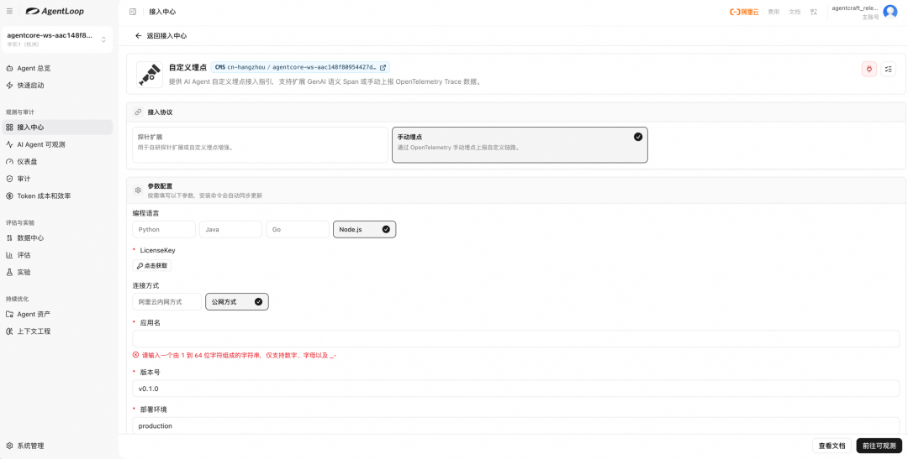
- 打开上述页面。
- 选择「手动埋点」→「Node.js」。
- 在「参数配置」中填写应用名、版本号和部署环境，点击「LicenseKey → 点击获取」。
- 滚动到「初始化 OpenTelemetry SDK 和 Exporter」，从生成的代码中复制对应字段。
| 变量名 | 获取方式 |
|---|---|
RUNLOOP_AGENTLOOP_ENDPOINT | 选择「阿里云内网方式」或「公网方式」，复制 OTLPTraceExporter 中的 url |
RUNLOOP_AGENTLOOP_LICENSE_KEY | 点击「LicenseKey → 点击获取」，复制 headers["x-arms-license-key"]，应存入 Secret |
RUNLOOP_AGENTLOOP_PROJECT | 复制 headers["x-arms-project"] |
RUNLOOP_AGENTLOOP_WORKSPACE | 复制 headers["x-cms-workspace"] 或 resource["acs.cms.workspace"] |
RUNLOOP_AGENTLOOP_SERVICE_NAME | 来自参数配置中的「应用名」，对应 resource["service.name"] |
RUNLOOP_AGENTLOOP_SERVICE_VERSION | 来自「版本号」，对应 resource["service.version"] |
RUNLOOP_AGENTLOOP_ENVIRONMENT | 来自「部署环境」，对应 resource["deployment.environment"] |
RUNLOOP_AGENTLOOP_CAPTURE_CONTENT | Runloop 自有开关，不从控制台获取；是否采集模型输入输出内容 |
RUNLOOP_AGENTLOOP_CONFIG_SOURCE | Runloop 自有配置；填写 env 或 agentcore |
RUNLOOP_AGENTLOOP_CREDENTIAL_NAME | 使用 agentcore 配置源时，填写保存 AgentLoop 配置的 AgentCore 凭据名称 |
三、效果演示
使用 agentcore-chat 前端进行更贴近 Agent 使用场景的演示，克隆源码在本地安装启动即可。
1、基础能力
查看 Agent 的设定和包含的技能工具。
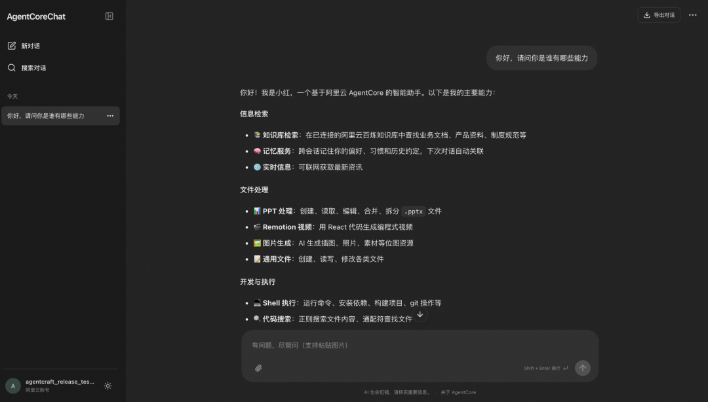
2、工具调用
测试 MCP 工具。
 |  |
|---|
3、技能调用
测试 PPT 技能。
- 触发 PPTX 技能
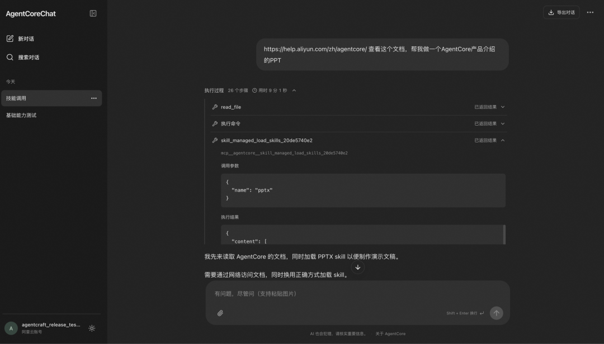
- 输出产物，并进行特殊文件展示
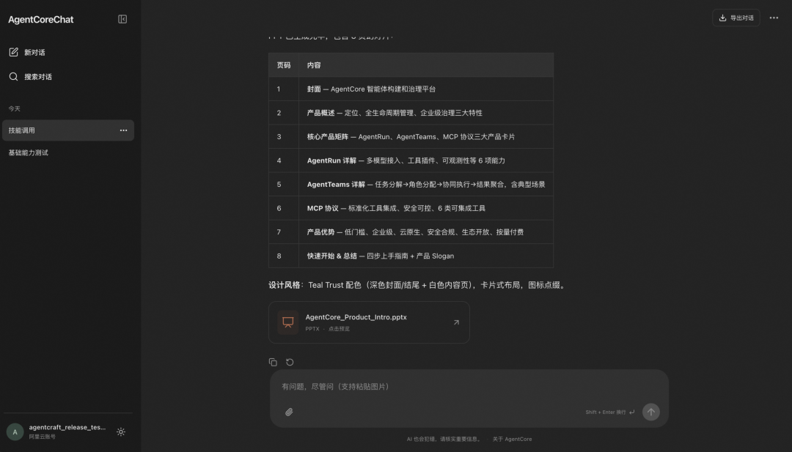
- 预览文件
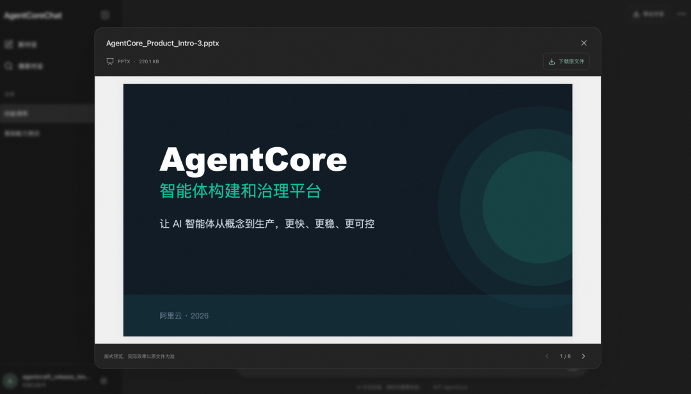
4、知识库使用
向知识库导入数据，来测试使用效果，比如，下面是整理的“中国广电的终端型号信息”数据，以及通过问答的精准召回对比。
 |  |
|---|
5、记忆使用
演示记忆的读取和查询。
 |  |
|---|
6、多模态
针对 AgentCore 官网的图片截图。
 |  |
|---|
7、Agent 观测
基础指标
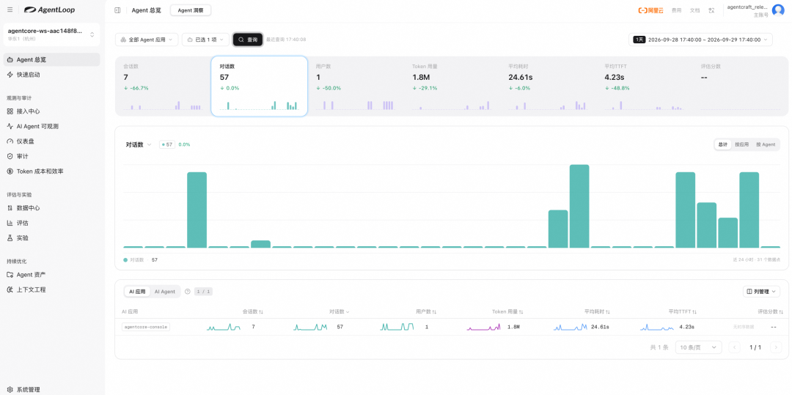
实体详情
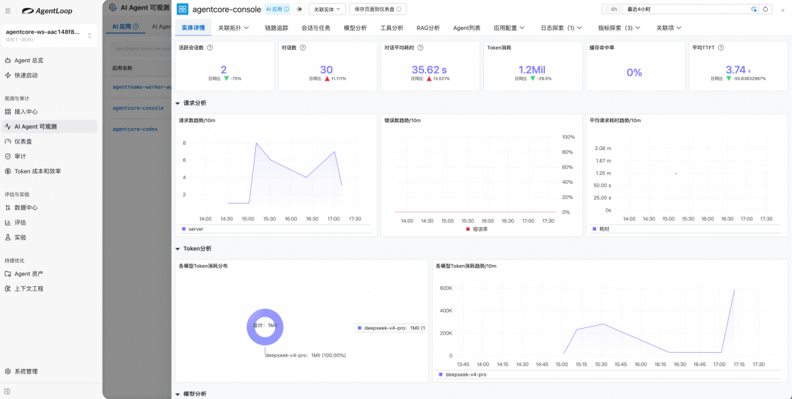
链路追踪
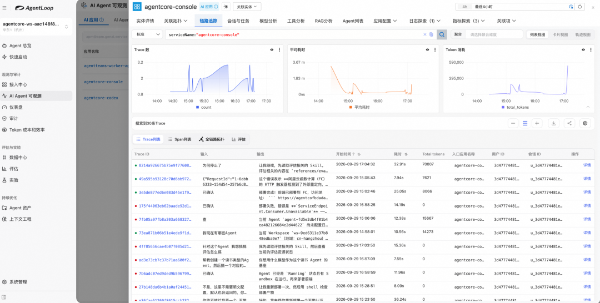
Agent 循环详情
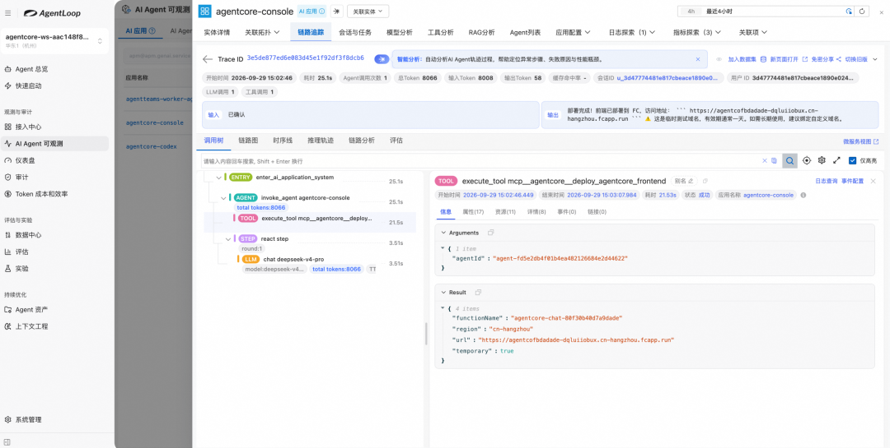
四、源码和测试数据
1、源码
AgenCore-Runloop
https://github.com/ai-agentcore/agentcore-runloop
AgentCore-Chat
https://github.com/ai-agentcore/agentcore-chat
2、测试
AgentCore x Codex 指标数据
当前自定义 Codex 的典型 TTFT 约 1.7 秒，P95 约 1.95 秒；网关约 0.18 秒开始返回 SSE，主要耗时仍在模型首文本生成阶段，20 个样本中没有发现明显稳定性问题或严重长尾。
相关链接：
[1] AgentCore
https://www.aliyun.com/product/agentcore
归属：[[02-输入/按主题/AI与效率/_index|AI与效率]]